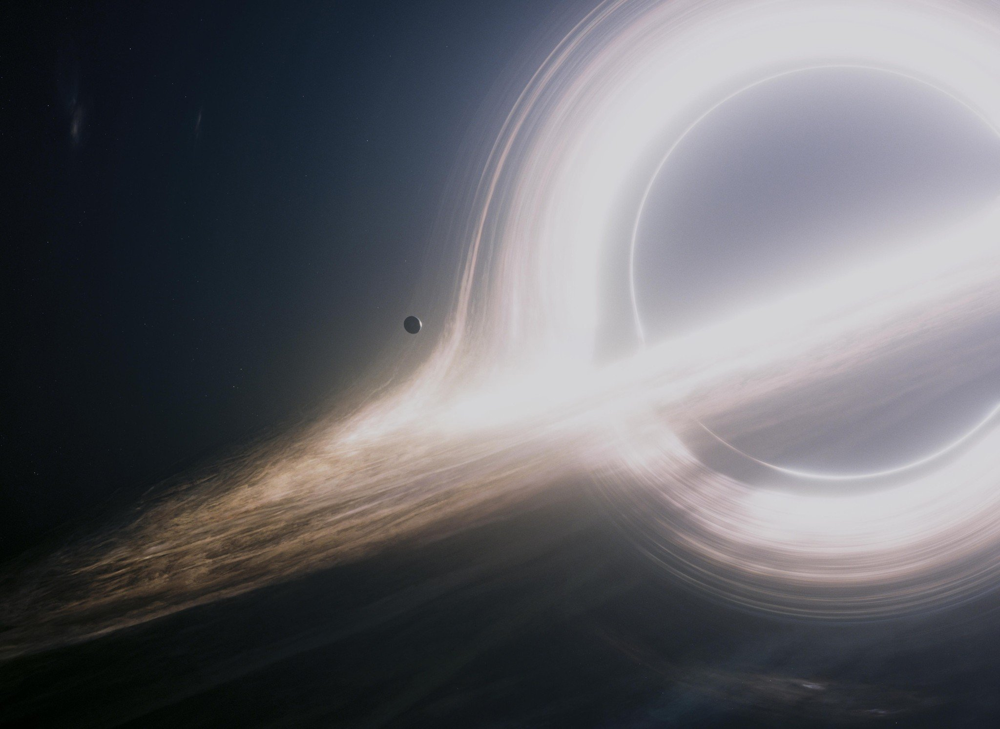

each frame is perfect, and what more can you ask for.
Nolan understands that film is fundamentally a visual medium and he goes all in on that idea with this movie. Not to say that the narrative background of a film doesn't matter, rather what separates cinema above other story based artforms is the power of the visual image. We remember scenes and images from iconic films so vividly because they makes us feel something and this movie is a perfect example for that. Millions of people at the snap of a finger can mentally recreate any major scene from this movie, whether it be falling into the black hole, the mountainous waves, the docking sequence, or even Matthew McConaughey crying in the spaceship. Why? because they made us FEEL something that other films did not. I would argue this is a marvel of the modern film industry because of the widespread effect it had on all audiences and reminding us how powerful images can be.
The common critique of Interstellar while accurate is a bit unfair in my eyes. The dialogue is subpar to say the least and the story is shaky at many points, but i don't see how that takes away from the film as much as many argue it does. Movies are made to be felt and perceived, not understood as some sort of logical exercise. Who cares that concepts like gravity and time and love are tossed around loosely when at a core level the story is extremely human and can be followed all the way through. I would argue that the simplicity of the story is used to give the center stage to the images and music and not distract the audience from what Nolan wanted to show them.
We owe it to Nolan for what he did with Interstellar. It is rare that every form of moviegoer is so highly appreciative of a film at this level. Movies like this introduce younger audiences to the joy of cinema and remind more experienced audience members why they fell in love with the artform in the first place.
Also, chef's kiss to Hans for cooking up a banger soundtrack which is ever so important to this film. It is rare when multiple legendary artists are so in tune when creating a collaborative work such as this one.